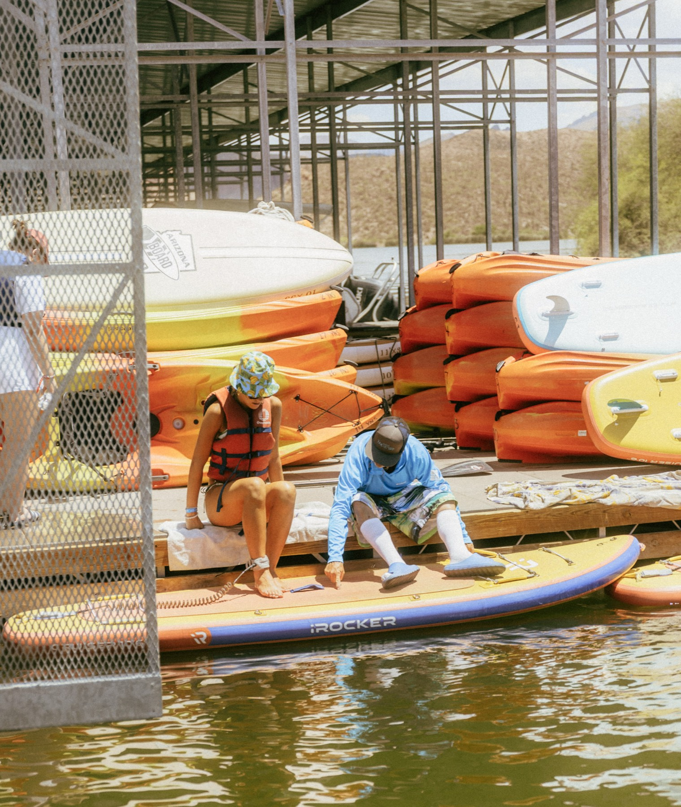
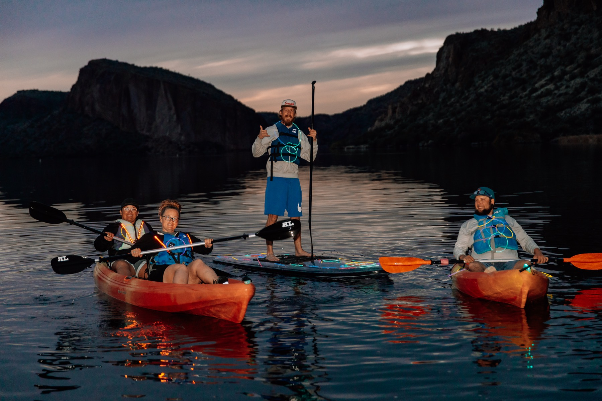
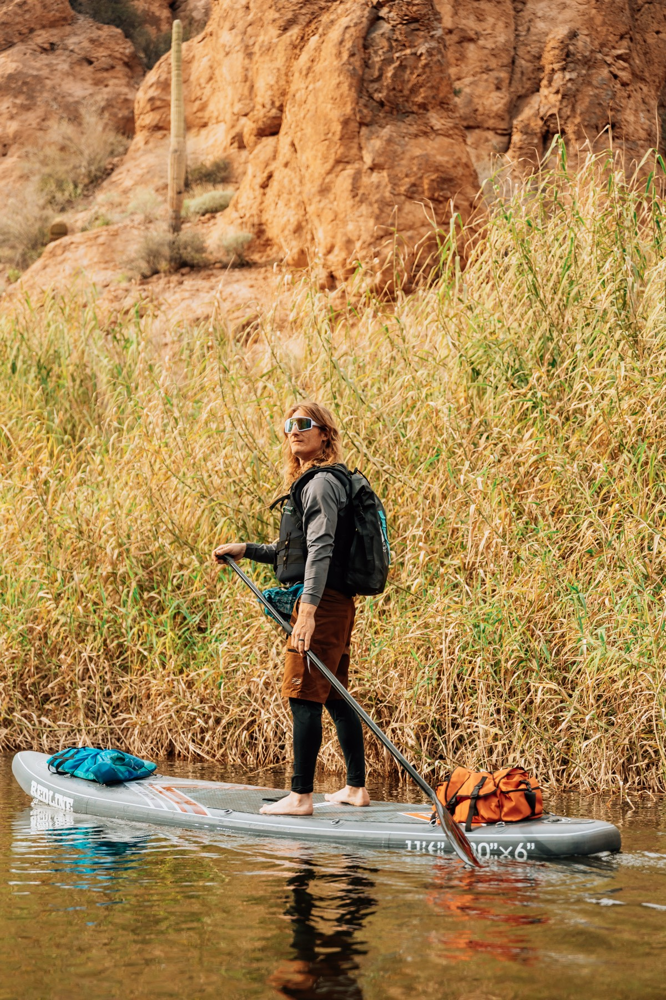
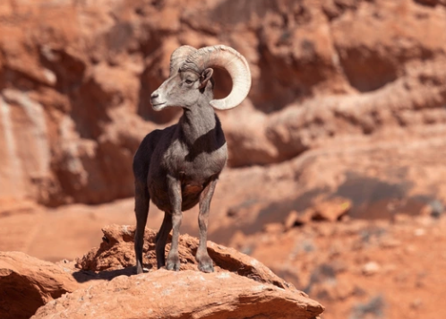
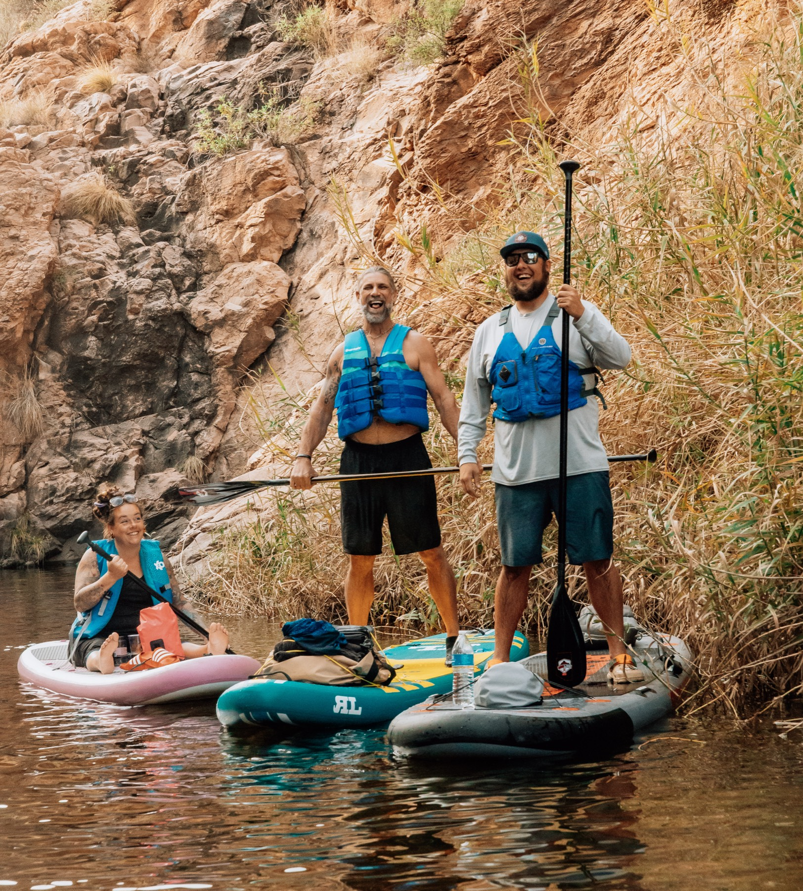
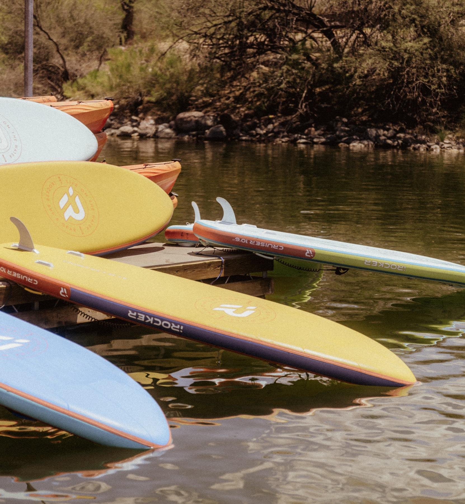

The Best Day Trip from Phoenix or Scottsdale Is One Most People Haven't Taken
45 minutes east, inside the Superstition Mountains. Canyon Lake, the Apache Trail, Tortilla Flat — the full itinerary.
Read More →Paddling tips, Canyon Lake guides, event recaps, and everything you need to make the most of your time out here.
 Seasonal · Urgent
Seasonal · Urgent
SRP and the Bureau of Reclamation will lower Canyon Lake by 54 feet starting September 16 for critical dam safety inspections — a process that only happens every 20 years. Here's everything you need to know, and why you should come paddle before the closure begins.
Read the Full Post →Bighorn sheep, herons & more
History, hidden spots, local guides
Best times to paddle, weather tips
Bachelorette, corporate, parties
 Local Guide
Local Guide
45 minutes east, inside the Superstition Mountains. Canyon Lake, the Apache Trail, Tortilla Flat — the full itinerary.
Read More → Local Guide
Local Guide
What we offer, why Canyon Lake is different from anything else near the city, and how to book.
Read More →
Beginners GuideStep by step — from parking lot to water and back. Every first-timer question, answered.
Read More →
Gear GuideWater, sunscreen, snacks, a hat, quick-dry clothes — everything you need for a great day. The #1 mistake first-timers make is not packing enough.
Read More →
Canyon Lake GuideNo motorized boats, calm protected water, 5 minutes from the dock. The perfect starting point for first-timers and families.
Read More →
WildlifeMassive curved horns, standing still on a ledge fifty feet above you. Where to look, when to go, and how to spot them respectfully.
Read More →
Canyon Lake GuideMost visitors only see the main lake. Hidden coves, herons, bighorn sheep, and red rock formations — only accessible by kayak or paddleboard.
Read More →
HistoryBuilt in 1925, used for WWII military training, and now one of Arizona's most beloved outdoor destinations. The full story.
Read More → Seasonal
Seasonal
Calm water, cooler weather, fewer crowds, and sunsets that look like a painting. Why fall is our favorite season.
Read More → Groups & Events
Groups & Events
Done with the same old bar crawl? Canyon Lake is the adventure your group actually wants — and will actually remember.
Read More → History
History
In 1872, U.S. troops ambushed Apache families in a cave near what is now Canyon Lake. The sobering history behind one of Arizona's most beautiful places.
Read More →
Local Guide
When it rains in the desert, Canyon Lake transforms. Waterfalls appear, the canyon walls go vivid crimson, and the lake takes on a mist that looks otherworldly.
Read More →Canyon Lake Marina sits along AZ-88 in the Tonto National Forest, about 45 minutes east of Phoenix. The lake is surrounded by the towering red-orange walls of the Superstition Mountains — one of the most dramatic and photogenic paddling settings in the entire American Southwest.
Yak N Sup offers single kayak, tandem kayak, single SUP, and tandem SUP rentals at Canyon Lake Marina. No experience is required — all rentals include a paddle, life jacket, and safety briefing. Guided tours run daily at 10:30 AM, and special events like Full Moon Paddles and Sunset Paddles are offered on select dates throughout the season.
The peak season at Canyon Lake runs October through May, with cooler temperatures ideal for long paddles. Summers are hot but the lake is absolutely open — early morning rentals before 10 AM are especially popular from June through September. We operate 7 days a week, rain or shine.